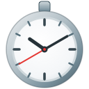

Clock face
Show the time as digits or as an analog dial with hands.
Time format
How the clock shows the time of day.
Timer face
Show the countdown as digits or a visual dial that empties as time runs out.
Quick presets
Edit the shortcut chips on the countdown setup. Up to 8.
Keyboard shortcut
Alt+T toggles the active countdown from any tab — start your last duration, or pause/resume what's running. Customise at chrome://extensions/shortcuts.
When a countdown ends
Pick how Timer lets you know a countdown has finished.
Chime sound
Pick the end-of-countdown sound.

Timer
A clean clock, stopwatch, and countdown timer.
Version —